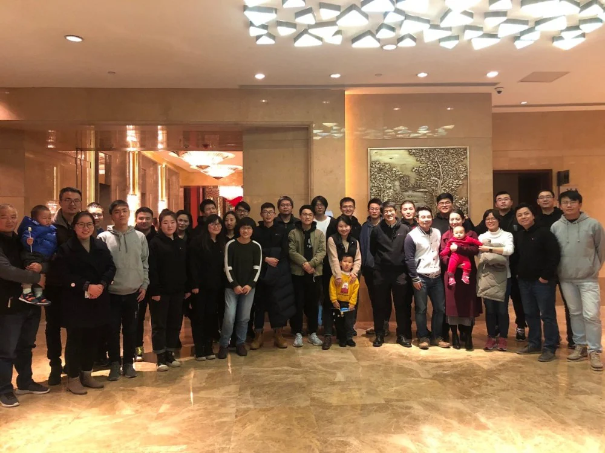
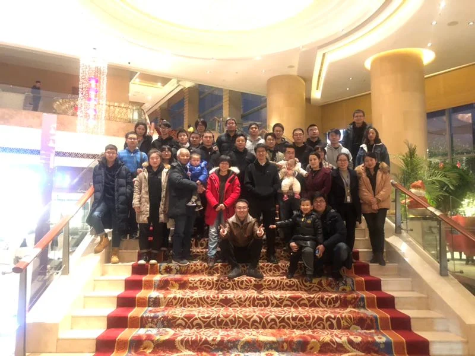

新年的钟声即将敲响,时光的车轮又留下了一道深深的印痕。伴随着冬日里温暖的阳光，满怀着喜悦的心情，2019年1月16号的晚上，iMED中国团队的聚餐活动如约而至。在这个温暖的冬日，iMED中国以这样一种愉快的方式迎接即将到来的今年。
在过去的这一年时间，团队努力前进，科研硕果累累。2018年间团队成员人数也增长到了41人之多，这般发展速度已经超过了团队建立之初所规划的5年从1人扩张到60人的目标。团队在论文发表上，iMED中国团队在2018年总共在IEEE、MICCAI、EMBC等高水平会议或期刊上发表了31篇高水准论文，比2017年的14篇论文多出了一倍多；而在专利发表上，今年也申请了6篇专利。除此之外，今年iMED中国团队还在6月份的时候举办了一次IPMED学术研讨会（中科院宁波工研院慈溪医工所举办首届国际智能精准医疗学术研讨会），从国际国内上都邀请了业界著名的嘉宾参加演讲和研讨，并被多家媒体杂志所报道。这些成果都是团队合理规划和努力奋斗的成果，所以在新年到来之前，当然得找个机会让团队好好聚聚，唠唠嗑嘛，于是这就有了这一次的聚餐。
在这次聚餐的过程中，大家都很开心的。因为是自助餐，大家都可以去选取自己喜欢的食物。尤其令记忆犹新人的就是门口的烧饼了，一口脆香，一口鲜甜，肉的鲜香和梅菜的醇厚完美的融合在一起。通过聚餐，我们给2018年团队的努力画上了一个句号，也为来年的奋斗立下了一个Flag。除此之外，聚餐还加强了iMED中国同事之间的交流，以及团队之间的沟通与对接。
回顾2018年iMED所走过的历程，布满着奋斗的挫折与坎坷，但更满载着拼搏的豪情和成功的喜悦。 我们是一只团结友爱、凝聚力强的团队，展望2019年，我们将再接再厉，只要我们有梦想，有追求，有热情，iMED的明天一定会更好。


作者：岳星宇、杨燕鹤